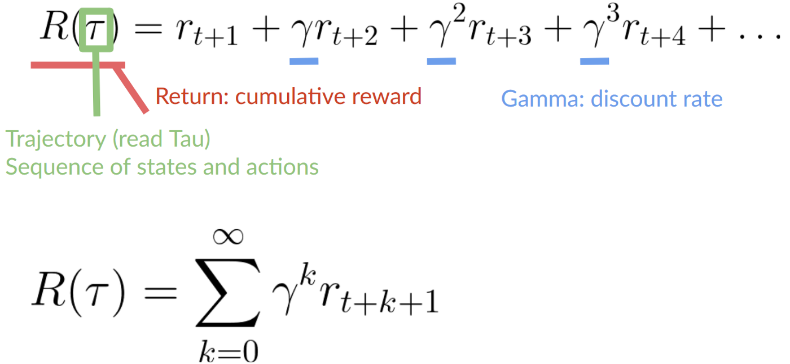

note 来自 https://huggingface.co/learn/deep-rl-course/unit0/introduction
The Deep Reinforcement Learning Course
账号
【done】创建 Hugging Face 账号 【done】创建 Hugging Face 的 Discord server 【done】使用 Discord
1. RL 基本理论
一个代理（AI）将从环境中通过与环境交互（试错），并接收奖励（正面或负面）作为反馈来学习。所以是无监督的学习。RL 仅仅是从行动中学习的计算方法。
RL 的流程是 State、Action、Reward 和下一个 State 的循环。Agent 的目的是最大化累计 Reward。所以 RL 是基于 Reward Hypothesis 的。
Markov Decision Process (MDP) 简单讲：马尔可夫性质意味着我们的代理只需要当前状态来决定采取什么行动，而不需要它们之前所有状态的全部历史。
Markov Decision Process 有以下要素组成：
- 状态空间 (State Space, $S$)：所有可能的状态的集合，$S = {s_1, s_2, \dots}$
- 动作空间 (Action Space, $A$)：所有可能的动作的集合，$A = {a_1, a_2, \dots}$
- 状态转移概率 (Transition Probability, $P(s’|s, a)$)：在状态 $s \in S$ 下执行动作 $a \in A$ 后，转移到状态 $s’ \in S$ 的概率。
- 奖励函数 (Reward Function, $R(s, a)$)：在状态 $s \in S$ 下执行动作 $a \in A$ 后获得的奖励。
- 折扣因子 (Discount Factor, $\gamma$)：用于衡量未来奖励的重要性, $\gamma \in [0, 1)$
单 Agent 强化学习中，环境通常被认为是 Stationary 的，这意味着状态转移概率 $P$ 和奖励函数 $R$ 不会随着时间变化。
State
Observation space
- State 表示 Agent 从环境中获取的所有信息（没有隐藏信息）。在视频游戏中，一个视频帧 就表示一个 State。一个 State 中的信息是完全的可观察的。比如象棋。
- Obervation 是一个不完全可观察的状态。比如横版游戏中，Agent只能观察到附近的信息。
State 和 Observation 严格上是不同的，但统称为 State
Action
Action Space
- Discrete space：有限个动作：比如马里奥中，只有上下左右的动作
- Continuous space：连续的动作空间，是无限的，比如自动驾驶汽车的方向盘
Reward \ Cumulative Reward \ Discounting
Rewards and the discounting, 这是给 Agent 唯一的反馈。Cumulative Reward 是累计的 Reward。
Discounting 是什么意思呢？用 $ \gamma $ 表示，值在0.95~0.99间。$\gamma$ 越大，折扣越小。这意味着我们的 Agent 更关心长期奖励。相反，$\gamma$ 越小，折扣就越大。这意味着我们的 Agent 更关心短期回报（最近的奶酪）。
实际中每一个 Reward 都会乘以一个 $\gamma$。
KAQ: 既然有 Reward，为什么没有 惩罚呢？而是用这种 $\gamma$ 的形式？
答：通过 Reward * $\gamma$ 也可以表示惩罚，这样统一了概念，方便实现，也方便公式推导。
注意：Reward 是关键概念，每一个 State 的有自己的 Reward 值 $ r $。一个Episode 结束后，用这个Cumulative Reward 来评估这个 Episode 的好坏。Cumulative Reward 这样计算：
|  |
|---|
| Cumulative Reward |
Accumulative Reward 是一种 Reward Shapping。它通过调整原始奖励函数 $R(s, a)$，添加额外的奖励（或惩罚），以提供更密集或更有指导性的反馈，加速学习过程。
Task 的类型
Episodic and Continuing:
- Episodic 是从一个开始状态到一个结束状态的序列。
- Continuing tasks 永远进行，不会结束。
The Exploration/Exploitation trade-off
继续探索和利用已知 两者间的权衡。
- Exploration 通过尝试随机动作来探索环境，以了解更多关于环境的信息。
- Exploitation 利用已知信息来最大化回报。
这个与学习效率有关，我们必须定义一个规则来帮助处理这个 trade-off。
Policy $ \pi $ 是 Agent 的大脑
它的功能是在一个 State，告诉 Agent 如何 take action 以获得最大 Cumulative Reward。所以这个 Policy 是需要学习的。所以：我们的目标是通过训练找到最优的 Policy，以获取 maximizes expected return 。
Policy 是 Agent 做决策的过程。
两种方法来训练：Policy-Based Methods & Value-Based Methods。
训练 Policy 的方法
1. Value-Based Methods
原理: （核心）学习一个价值函数（Value Function），用于评估在给定 State 下采取某个动作的价值。Agent 通过选择价值最高的动作来间接地学习 Policy
例子:
- Q-Learning,
- SARSA,
- Deep Q-Networks (DQN)
优点:
- 实现相对简单，易于理解
- 在离散动作空间中表现良好
缺点:
- 难以处理连续或高维动作空间
- 间接地学习，所以策略是隐式的，难以直接优化或结合先验知识
2. Policy-Based Methods
原理: 直接学习一个参数化了的策略，用于将状态映射到动作。Agent 通过优化策略参数来最大化期望回报。通常，他是个 probability distribution over the set of possible actions at that state.
类型：
- Stochastic（随机的，有概率的）: 给定状态 $ s $，策略 $ \pi $ 输出动作集合 $ \mathcal{A} $ 上的概率分布。公式：$\pi(a | s) = P(a | s)$ ，$ \pi(a | s) $ 表示在状态 $ s \in \mathcal{S} $ 下选择动作 $ a \in \mathcal{A} $ 的概率。$ P(a | s) $ 是动作 $ a $ 的条件概率分布，满足 $ \sum_{a \in \mathcal{A}} \pi(a | s) = 1 $。
- Deterministic（确定的）: 给定状态 $ s $，策略 $ \pi $ 输出确定的动作 $ a $（没有动作的概率，就是确定的动作）。公式：$a = \pi(s)$
例子:
- REINFORCE,
- Trust Region Policy Optimization (TRPO),
- Proximal Policy Optimization (PPO)
优点:
- 能够处理连续和高维动作空间
- 可以学习随机策略，适用于需要探索或处理不确定性的环境
- 策略是显式的，易于调整或与其他策略结合
缺点:
- 通常需要更多的数据才能收敛
- 训练可能不稳定，容易出现高方差
- 实现和调参通常更复杂
3. Actor-Critic Methods:
原理: 结合了 Value-Based 和 Policy-Based 方法的优点: Actor 负责学习策略，Critic 负责评估策略的价值
例子:
- Proximal Policy Optimization (PPO)
- Asynchronous Advantage Actor-Critic (A3C),
- Deep Deterministic Policy Gradient (DDPG),
- Soft Actor-Critic (SAC)
优点: 结合了 Value-Based 和 Policy-Based 方法的优点，通常能获得更稳定和高效的学习效果。
实际应用选择:
- Value-Based Methods: 适用于动作空间离散且不太大的环境，例如 Atari 游戏。
- Policy-Based Methods: 适用于动作空间连续或高维的环境，例如机器人控制。
- Actor-Critic Methods: 适用于复杂的环境，需要平衡稳定性和效率，例如自动驾驶。
实战 Huggy
尝试，play around
Hugging Face token：xxx
执行文件中的命令，训练Agent 并且上传到 Hugging face，然后在 Unity 页面中使用自己的 Agent：